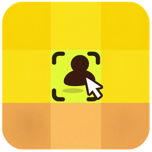

CocAutoPlayer
Tự động hóa Clash of Critters qua ADB
Tính năng
- Tự Động Chiến Đấu: chơi liên tục các màn, tự triển khai đội hình theo màn và thử lại khi thua.
- Phiêu Lưu Cổ Vật và Phiêu Lưu Cổ Vật Giới Hạn.
- Săn Bắn Zobo.
- Xem Đội Hình: mở trang đội hình gợi ý cho màn hiện tại.
Yêu cầu
- Windows 10/11.
- Giả lập Android có bật ADB, hoặc điện thoại thật bật gỡ lỗi USB.
- Màn hình dọc
1080x1920. Game:com.farlightgames.pgame.gp.vn.
Cài đặt và dùng
- Tải
CocAutoPlayer_<phiên bản>_x64-setup.exeở trang Releases và cài đặt. Bản này cài song song, không ghi đè AdbAutoPlayer cũ. - Mở game trên giả lập, mở CocAutoPlayer và chọn thiết bị trong phần cài đặt ADB.
- Chọn lệnh muốn chạy và bấm chạy. Ứng dụng tự cập nhật khi có bản mới.
Hỏi đáp
Báo lỗi hoặc góp ý tại GitHub Issues.